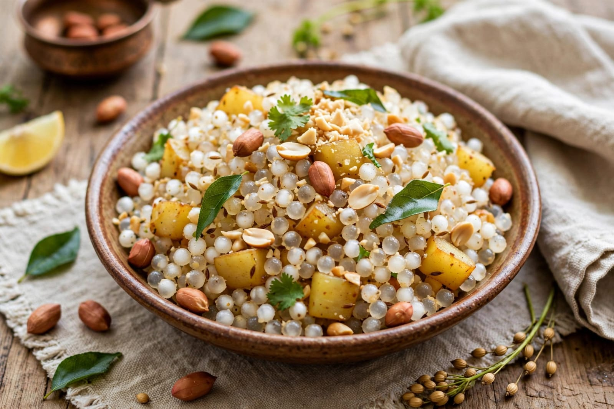
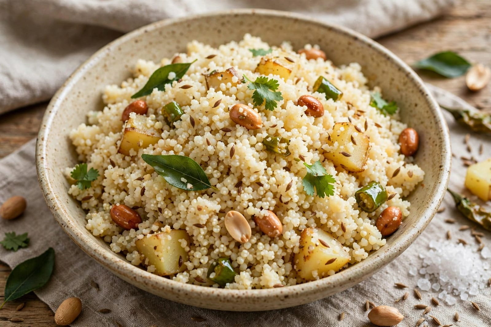
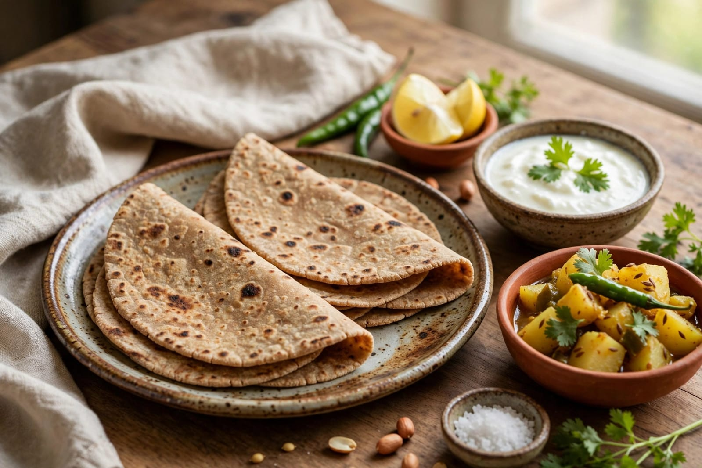

About Navaratri
Navaratri is one of the important festivals celebrated in India. The word Navaratri means nine nights. The festival is dedicated mainly to Goddess Durga. Navaratri is celebrated with great devotion and happiness. The festival usually lasts for nine nights and ten days. It is celebrated in different parts of India. Different regions have different traditions during Navaratri. Goddess Durga is worshipped in many places. The festival represents the victory of good over evil. People observe prayers and religious activities during Navaratri. Many devotees visit temples during the festival. Homes are cleaned and decorated before the celebration. People decorate their homes with flowers and lights. Special pujas are performed during Navaratri. Devotees may observe fasting during the festival. Traditional prayers are offered to Goddess Durga. The festival is associated with Shakti or divine feminine power. Goddess Durga is worshipped in different forms. Each day may be associated with a different form of the Goddess. People wear traditional clothes during the celebration. Women often participate in special cultural activities. Men and children also take part in the celebrations. Music and dancing are important parts of Navaratri. Garba is a popular traditional dance. Dandiya Raas is another popular dance. People gather in groups to perform Garba. Colourful traditional clothes are worn during dance programs. Cultural events are organized in many places. Temples and public areas are decorated beautifully. People meet friends and relatives during the festival. Families come together to celebrate Navaratri. Special food is prepared during the festival. Sweets are shared with family and friends. Devotional songs are sung during religious programs. People listen to stories about Goddess Durga. The festival creates a spiritual atmosphere. Navaratri encourages devotion and unity. It brings happiness to families and communities. Navaratri has an important place in Indian culture.
Navaratri is celebrated according to the Hindu calendar. The date of Navaratri changes every year. Sharad Navaratri is one of the most widely celebrated forms. It usually occurs during September or October. The festival begins with prayers to Goddess Durga. Kalash or other traditional objects may be used in worship. Devotees visit temples to offer prayers. Many temples organize special programs. Religious ceremonies are performed during the festival. People decorate temples with flowers and lights. Different forms of Goddess Durga are worshipped. The nine forms are commonly known as Navadurga. Each form represents a special quality of the Goddess. Devotees pray for strength and prosperity. Some people observe fasting during the festival. Fasting practices can differ according to tradition. People prepare special dishes for fasting days. Fruits and other suitable foods may be eaten. Traditional sweets are also prepared. Garba celebrations are especially popular in Gujarat. Dandiya is also widely enjoyed during Navaratri. People dance in circles during Garba. Dandiya is performed using decorated sticks. Traditional music is played during dance programs. People wear colourful traditional clothes. Women may wear chaniya choli during celebrations. Men may wear traditional outfits such as kurta and kediyu. Large community events are organized in many cities. People participate in cultural competitions. Schools and colleges may organize Navaratri programs. Families invite relatives to their homes. People exchange greetings during the festival. Navaratri creates a strong feeling of community. The festival encourages devotion and respect. It also promotes cultural traditions. Children enjoy the music and celebrations. Young people participate in traditional dances. Navaratri is celebrated with enthusiasm across India. The festival spreads happiness and positive energy.
Navaratri has many regional forms and traditions. Different states celebrate the festival in unique ways. In West Bengal, Durga Puja is a major celebration. In Gujarat, Garba and Dandiya are very popular. In Karnataka, Mysuru Dasara is associated with the festival season. In Tamil Nadu, Golu is an important Navaratri tradition. In some regions, special dolls are arranged during Golu. People invite friends and relatives to see the decorations. Devotional music is enjoyed during the festival. Traditional dances are performed in many communities. Food is an important part of the celebrations. Families prepare special festive dishes. Sweets are offered during religious ceremonies. People share food with guests and neighbours. Navaratri teaches the importance of courage and devotion. It celebrates the power of good over evil. The festival strengthens family relationships. It brings communities together through culture and tradition. Navaratri is a colourful and meaningful Indian festival. It is celebrated with faith, joy and enthusiasm.
Special Foods

Sabudana Khichdi
Sabudana Khichdi is a popular dish enjoyed during fasting.

Samak Rice
Samak rice is commonly used to prepare fasting meals.

Kuttu Roti
Kuttu roti is a traditional fasting food prepared with buckwheat flour.